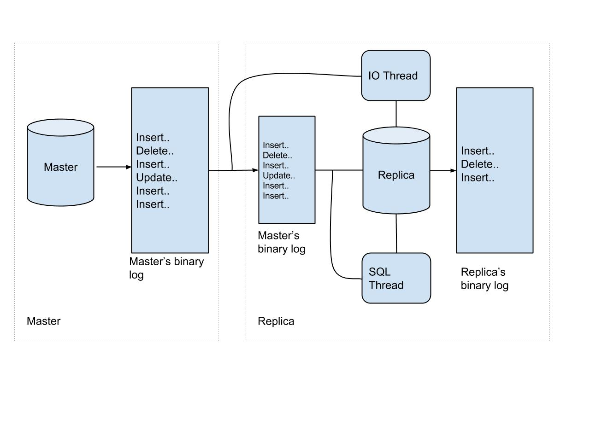
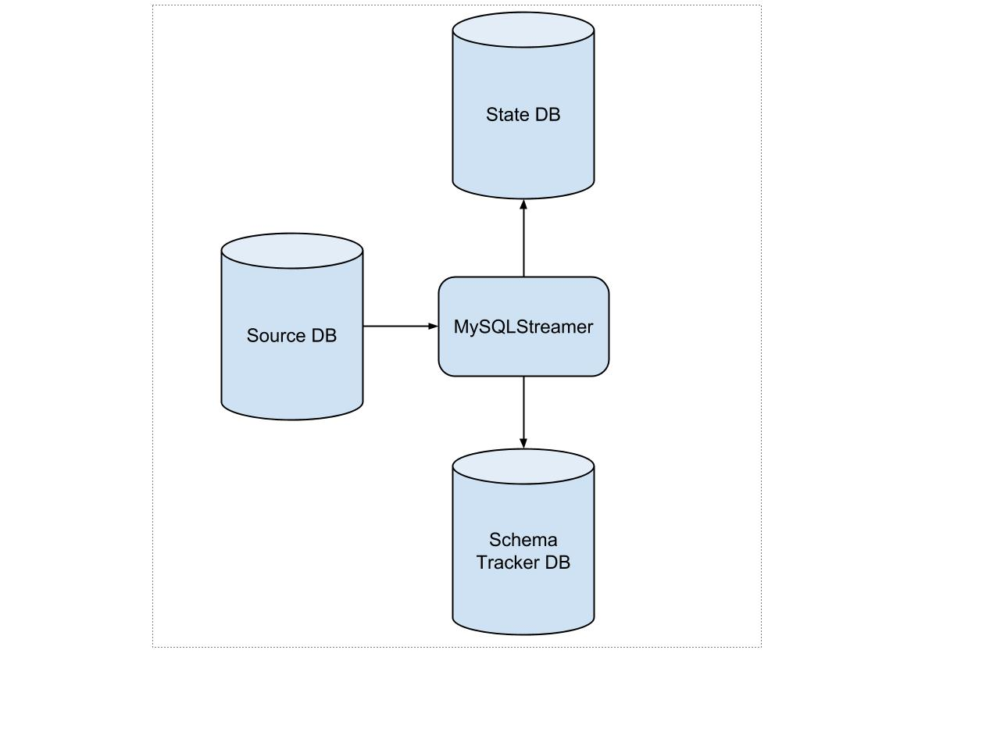

LECTURE NOTES
Yelp Realtime Streaming Data Infrastructure
Fast Order Search Using Yelp’s Data Pipeline and Elasticsearch
Yelp was experiencing drag on their food order history page due to database lookups. Each lookup required a join across four tables. They found they needed both a relational data store and a key-value store for lantency-sensitive, high-traffic contexts. They also wanted to support full-text search across their data. After weighing their options, they chose Elasticsearch.
Deciding on their schema took some planning, as they wanted to prevent the number of joins of common operations (that was the situation that led to the change in the first place!). They sureveyed their clients, and thought about possible future use cases. Yelp persists MySQL writes to Kafka topics, a topic tracking changes for each table. That provides a lot of useful data, but how would we reconstruct high level order updates from those topics?
They explored their data, and saw that high level order changes make changes to their ‘Order’ table. ‘Order’ was a Fact table in their Snowflake schema. This means they could check to see if new or updates rows were for existing orders (by checking ‘Order’). If they found the document was indeed in a finalized state, they could the row’s foreign keys to create a full denormalized order document.
Let’s see how this all comes together with Paastorm, Yelp’s in-house stream processor. An order assembler consumes the Kafka stream of ‘Order’ updates, references additional fields from the database, and constructs order documents that can then be instered into Elasticsearch. These documents are written to their own Kafka topic, ‘assembled_order’. This topic is consumed by Elasticpipe (a connector they built in Flink), which writes records out to Elasticsearch.
What happens if there is divergence between the ‘assembled_order’ topic and Elasticsearch? Elasticsearch has a feature called type coercion that was used. They developed their own auditing algorithm to ensure Elasticpipe was performing the way they expected. This algorithm retrieves, sorts, and dedupes all document ids that should exist in Elasticsearch by scanning the Kafka topic, and then scan Elasticsearch for possible missing documents using binary search.
Billions of Messages a Day
In 2011, Yelp transitioned to a service oriented architecture (SOA), which scaled to 150 production services by 2014. Here’s a fun factoid shared in the blog. Metcale’s Law that the effect of a telecommunications network is proportional to the square of the number of users connected to the system. This is a shorthand way of characterizing network effects in complex systems. We can compare this to the services in a SOA. Ideally we have the effect of all those possible pathways through the system. However, if we use RESTFul HTTP connections between all pairs of services this will be difficult to scale.
Since 2016, Yelp has had over 100 million reviews, which raises some unique challenges. “Bulk data applications become service scalability problems”. For instance, how would we handle joins across services? Won’t we need to make N service calls for the N+1 Query Problem?
The solution Yelp came up with lies in a message bus and standardized data formatting. For the bus, Kafka does the heavy lifting, shifting the complexity from $n^2$ to $n$. They exploit Kafka’s log compaction feature, which prunes topics down, and retains only the most recent message for every key. For formatting, they chose Avro, a space-efficient binary serialization format that integreates nicely with dynamic languages. What they exploited in their stream architecture was Avro’s schema evolution, which means that reader and writer applications can use different schema versions, provided they are compatible. This is very cool! Producers can iterate on their schema, without effecting consumer applications. Schemas are catalogued in an HTTP schema store called the “Schematizer”, so that data can be transported without schemas. Schemas are retrieved and data is decoded at runtime.
So, with a set of Kafka topics regulated by a Schematizer, Yelp’s realtime data pipeline can provide some important guarentees:
- format (registered schema are immutable)
- compatability (every active schema assigned to a topic is guarenteed to be compatible with every other active schema assigned to the same topic)
- registration (producers and consumers register whenever they produce or consume data with a schema, so there is a log of which users are using which schema at what frequency)
- data ownership (all schema require documentation, and a team assignment, which is exposed through an interface called Watson)
- data availability (database change capture can reconstruct a complete snapshot)
Using Services to Break Down Monoliths
I was remarking to a colleague that I’ve entered the field of data engineering at the height of service oriented architecture, and that I actually need to back up and learn more about the monoliths from which such systems came. What I’ve been enjoying about the Yelp blog is that they share the points of inflection in their systems.
Here are some of the tools/practices they’re using at Yelp to keep their services humming (and growing):
- Swagger documents the interface of HHTP/JSON services. swagger-py will automatically create a Python client given a Swagger specification, and Swagger UI provides a centralized directory for all service interfaces.
- Docker containers are used to spin up test instances for services, creating images that can be pulled in as dependencies by other service authors who wish to acceptance test the service.
- Pyramid is used as the service stack’s web framework, which is a Python package that “makes it easy to write web applications”.
- gevent is a coroutine-based Python networking library providing a high-level synchronous API
- SmartStack backs the service discovery system, with each client host running an HAProxy instance bound to a localhost. A client contacts a service by connecting to its localhost load balancer which then proxies the request to a service instance.
- SQLAlchemy is used as the database access layer.
- uWSGI is used behind all the hosting services.
More than Just a Schema Store
Being out in front of the curve has its advantages, but in tech that can sometimes mean you are building and maintaining software that will one day be a big fancy open source project others can plug and play with. Such was the case when Yelp tackled its schema management. There wasn’t a product on the market suited to their needs, so they built their own solution, the Schematizer (which is the closest to a data engineering superhero name I’ve ever heard).
In the world of NoSQL databases, schemas can get a bad rap. But as Storm’s founder Nathan Marz puts it, schemas force us to deal with exceptions at the time the data is added, when the context is the most rich as to what might be wrong, as opposed to handling such misisng or incorrectly formatted data downstream, where the context is the weakest. When used well, schemas can reduce serious debugging headaches and ensure consumers receive data in the form they expect.
Yelp uses Avro to represent their schemas, which are defined with JSON. If you’re interested in exploring this landscape, be sure to check out Thrift as well. One of the Avro features highlighted in this article is schema evolution, which handles what happens when when Avro schema are changed after data has been written to the data store using an older version. Here’s more info on schema evolution from Oracle. At Yelp, each schema that strams through the pipeline is serialized with an Avro schema. The message itself contains a schema ID, so when it reaches the consumer the consumer can retrieve the appropriate schema from the Schematizer and deserialize the message. Having all the schemas in one place creates a “single point of truth”.
An interesting case worth considering is what happens when an upstream producer changes the schema of the data it passes to the pipeline. How will this affect consumers downstream? This is addressed by the Schematizer, which determines topics that can safely be assigned to the new schema based on schema compatibility. This compatibility is determined by Avro resolution roles, which you can read more about here. If you look through the resolution steps, they’re pretty intuitive - the schemas have to define compatible data structures (i.e. “maps whose value types match”, or “have the same primitive type”). Values from the writer can be “promoted” to what the reader expects. For example, int is promotable to long, float or double.
The primary key fields of the schemas in the Schematizer are used for log compaction, which is useful for restoring state after a crash. Log compaction retains the last update for each key, and a log compacted Kafka topic log contains a full snapshot of final record values for every record key. Log compaction allows consumers to restore their state from the log compacted topic. You can learn more about how log compaction works here.
It’s also worth mentioning, that when personally identifiable information (PII) fields are added to a schema that previously only had non-PII fields, the two schema are flagged as incompatible, and the Schematizer creates a new topic for the new schema. This is great feature for controlling access to private information.
Producers and Consumers are also tracked by the Schematizer. If something needs attention, this information can be used to contact the appropriate teams. Interestingly, this data is also available on its own Kafka topic, using Yelp Kafka which has a host of handy features.
Introducing PaaSTA: An Open, Distributed PaaS
PaaSTA allows developers to define the build, deployment, routing, and monitoring of their code through the setting of config files. PaaSTA helps developers at Yelp ship their code. It achieves this by integrating open-source components, including Docker, Mesos, Mesosphere Marathon, Chronos, SmartStack, Sensu, and Jenkins. It is this spirit of assembling existing tools that allows PaaSTA to leverage the best of what’s out there, with clear perforations around software so that new components can be swapped in as needed.
The process requires a Docker image for their repo, which includes the project’s dependencies. From there, developers define the number of instances needed, and PaaSTA spins up the cluster using Mesos, Marathon, and Chronos. SmartStack is used for service discovery, and Sensu routes alerts with PaaSTA monitoring the entire deployment suite.
PaaStorm: A Streaming Processor
One of the things I like most about Yelp is that over the years they’ve open-sourced several tools, including MRJob which supports MapReduce jobs in AWS. The team then noticed that the need for scheduling multiple MRJobs in a real-time context required additional support, and ideally they wanted this support to come from PaaSTA, Yelp’s PaaS that deploys services. That’s how PaaStorm came to be.
PaaStorm transformed data mostly writes to Kafka, although there are other endpoints, which allows all interested parties to register as a consumer of the transformed data. PaaStorm runs Spolts, which define a set of incoming messages (like a Spout) and the process to transform those messages (like a Bolt). The Spolt definition doesn’t directly reference Kafka. PaaStorm takes care of stitching up the Spolot to the source topic it needs, and publishing transformed data to the correct output Kafka topic.
The solution described here for failure discovery is actually pretty clever. They inject the Kafka offset for the next raw message into the last transformed message (downstream), which in turn emits the offset back to a callback in the producer. That way the system always knows the offset of what the Spolt was working on when the system last had a succcessful transformed message, and get rewind to that point.
In terms of monitoring, PaaStorm keeps track of the number of messages consumed and the number published. These can be compared to identify bottlenecks.
Hybrid Cloud using Mesos and Docker
While not on the Yelp Engineering Blog, I found this article helpful in understanding how Mesos was integrated into Yelp’s infastructure.
They used the Marathon PaaS framework to schedule and orchestrate jobs. The Docker-based microservice PaaSTA sits on top of this. PaaSTA takes core resource discovery and and launching of the containers, so the developers just have to focus on configuring their Docker containers and complying with the PaaSTA platform contract. PaaSTA allows for automatic provisioning and migrations of services across in-house and AWS hardware.
Yelps testing platform, Seagull, also uses Mesosphere (commercial package), combining Mesos with a custom scheduler to parallelize and accelerate unit tests. The estimate in this article is that Yelp runs about 17 million individual tests every day, all managed by Mesos. The company was reported to also be launching 1 million Docker containers per day. That’s a lot for Mesos to coordinate!
A nice side benefit is that they could spot bid on instances, since Mesos would be able to pick up where things left off if the instance disappeared during a job run. This way the job keeps going, and money is saved.
Making 30x performance improvements on Yelp’s MySQLStreamer
MySQLStreamer streams data from Yelp’s MySQL clusters into Kafka. To imagine the scope, MySQL databases at Yelp receive hundreds of millions of data manipulation requests per day, and tens of thousands of queries per second. It’s worth noting that one way they’ve met the demands of this volume is by running processes on PyPy (instead of Python’s CPython compiler).
They used a cool platform called VMProf that can help teams “understand and resolve performance bottlenecks” in their codebase. This platform samples Python stack traces and then generates a visualization that shows the percentage of time each function took relative to other functions.
Streaming MySQL tables in real-time with Kafka
Yelp built MySQLStreamer to monitor database changes and alert all subscribing services about them. A “change data capture and publish system”, which essentially bundles up all changes into messages and publishes them to Kafka. This relates to the concept of stream-table duality, which means a stream can be viewed as a table (replaying every chang to reconstruct the table) and a table can be viewed as a stream (iterating over every change in a table to create a stream).
To process replication across the cluster, events on the master database are first written to a binary log, which is read by each replica.

The two types of replication in MySQL are statement-based-replication (SBR) and row-based replication (RBR). For SBR, the master writes events to the binary log, and the replica’s SQL thread replays these statements on the replica. This approach has challenges, as the statements may generate different results on the master and replica (for instance, if RAND or NOW are used in the statements). The safer bet is RBR, which is what Yelp uses for their MySQLStreamer. Each event shows how the row of the table has been modified. We don’t care about the statement that generated the changes, we care about the changes themselves.
The two types of changes the MySQLStreamer is concerned with are DDL (Data Definition Language) which modify the database structure or schema and DML (Data Manipulation Language) which manipulate data within the specified schema. The MySQLStreamer handles both kinds of events, and publishes DML events to Kafka topics. In particular, there are four kinds of events that are processed: INSERT, UPDATE, DELETE, and REFRESH.
There are three databases involved in the MySQLStreamer process:
- Source DB stores change events from the upstream data
- State DB stores the MySQLStreamer’s internal states in three tables (DATA_EVENT_CHECKPOINT - each topic’s info and last known published offset, GLOBAL_EVENT_STATE - stores position, MYSQL_DUMPS - not quite sure how this is used other than in resotring after a failure)
- Schema Tracker DB - stores the Avro schemas created by the Schematizer.

Replication integrity between MySQL and Redshift
Write-ahead logging? Two-phase commit? Fuzz testing? Monkey testing? Black-box auditing?
OK, our friend Jacob has just laid out a bevy of interesting topics worthy of their own brief mention before diving in further.
- Write-ahead logging (WAL) systems write all modifications to the log before they are applied. The idea is that if something goes wrong, you can compare what output happened with what is written in the last log to see if the modification completed or was still being processed when the failure happened. This provides durability to the system, and also atomicity, as the log keeps track of each unit, and we know precisely which unit did or did not complete. This topic also brushes up against Algorithms for Recovery and Isolation Exploiting Semantics (ARIES).
- Two-phase commit protocol is a type of atomic commitment protocol (ATP), which “applies a set of distinct changes as a single operation” (thus sayeth Wikipedia). So atomic. It is a distributed algorithm that coordinates all the processes in a distributed transaction as to whether to commit or abort and roll back to an earlier state. There are two key phases involved, the voting phase and the completion phase. In the voting phase, the coordinator sends a query to commit message to all cohorts processing in the distributed transaction, and they respond with either a thumbs up or thumbs down (an agreement message or an abort message). If the coordinator receives agreement messages from all cohorts, then a commit message is sent to all cohorts, and life moves on. Otherwise, the coordinator sends a rollback message.
- Fuzz testing tests edge cases by sending invalid, random, or unexpected inputs to a system to test performance in such situations.
- Monkey testing is often implemented as random, automated unit tests.
Now back to the task at hand - verifying end-to-end replication integrity between MySQL and AWS Redshift. For this we will turn our attention to black-box auditing, which essentially means we can test the functionality of a black box without knowing anything about what’s actually in the black box.
To verify their data is eventually consistent, systems like Cassandra and Riak uase a process called anti-entropy repair that leverages Merkle trees (hash trees) to verify and/or update all replicas. The anti-entropy process can be implemented several ways, yet the general idea is that you take a snapshot of your replicas, partition them, create hash trees for each, and repair each inconsistent partition. This gets tricky for Dynamo systems, which are eventually consistent. How would we ensure that partitions are indeed inconsistent when we know there is inherent propogation delay?
This is the problem the Yelp team tackled, and their solution sprung from the recognition that one could expand the notion of equality to partition similarity (feels akin to conditional probabilities in the Bayesian revolution). The algorithm they came up with is similiar to the traditional anti-entropy repair, only it adds similarity testing into the mix.
To implement their similarity testing, they used MinHash which can calculate the Jacard similarity coefficient between two sets. Yelp’s implementation is expressed in SQL. This has the benefit of using Redshift’s built-in distributed query execution engine, which leverages a parallelized a MapReduce job to produce speedy results.